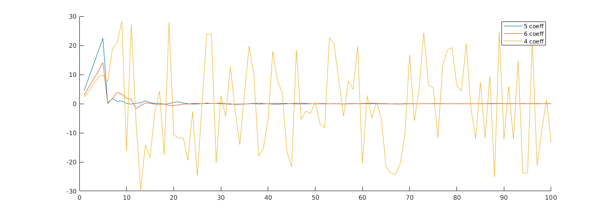

Contents
Finding filter with 5 coefficients
[e_5,h_5] = myfilter(5); h_5
h_5 =
4.9924
3.9941
2.9952
1.9976
0.9984
Finding filter coefficients with 6 coefficients
[e_6,h_6] = myfilter(6); h_6
h_6 =
-0.0005
4.9929
3.9949
2.9955
1.9974
0.9975
Finding filter coefficients with 4 coefficients
[e_4,h_4] = myfilter(4); h_4 figure(1),clf hold on plot(e_5) plot(e_6) plot(e_4) legend('5 coeff','6 coeff', '4 coeff');
h_4 =
3.9520
2.8303
1.9364
1.1507
 The filters that try to match the impulse response h = [1,2,3,4,5] can do a good job at estimating it if they have at least 5 coefficients. Otherwise they fail to do it.